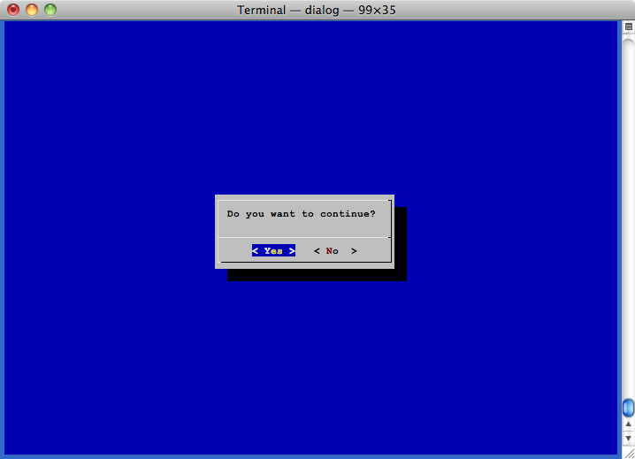
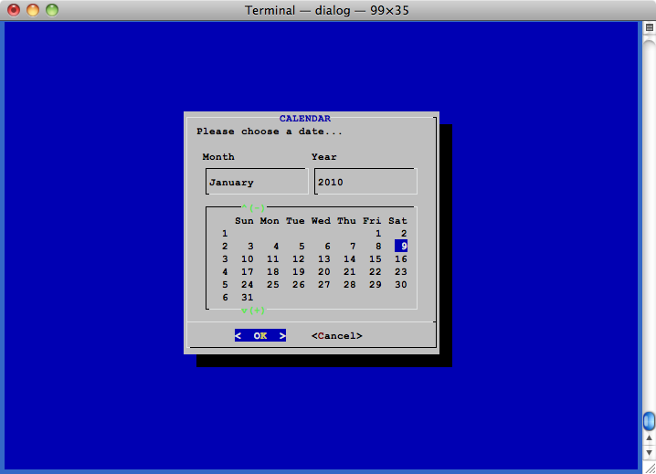
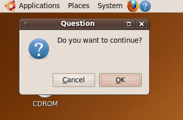

If you walk into any crowded machine room, chances are, you'll catch chit-chat about "shebangs," slashes, dot-dots, root, pipes, ports, and dash-dash this and that. If you speak UNIX®, you'll no doubt grok the local lingo—acronyms, command names, shortcuts, options, file names, and colloquialisms about UNIX—and feel right at home. Like practitioners of other art, UNIX users have an extensive vernacular for describing the specifics of their work.
But not everyone speaks UNIX; in fact, some may find the command line daunting or
perplexing. Further, you simply may not want to entrust the entirety of the
command line to an occasional or inexperienced user. To assist those unaccustomed
to the command line or to build custom solutions around the shell, you can build
GUIs for your scripts. With such tools—dialog and
Zenity are two worthy of mention (see Resources)—you
can use dialog boxes, file browsers, and other common "windowing" controls and
techniques to interact with your users. Indeed, dialog boxes provide for more natural
conversations: You present information, ask for a response, and react accordingly.
This installment of "Speaking UNIX" looks at dialog and Zenity
and shows how you can turn any script into a convincing GUI application. You use
dialog with traditional, text-based interfaces; Zenity proffers
the style of the modern, windowed desktop.
Add dialog boxes to any shell script
A command-line utility typically offers sufficient options to completely control each invocation. Some switches may enable or disable a feature, while other switches may process arguments, such as a list of names. On the command line, you present (nearly) all the information up front and let the job go. Graphical applications are very different. Choices are made through menus, check boxes, and file browsers. A graphical application takes in a little information, processes it, and then usually asks for more information. It's said that GUI applications are event driven.
The dialog utility spans the two worlds. You invoke the
utility whenever you need input from the user, and then return to your script
to continue processing whatever data was provided. In other words, if you write
a script to use dialog, you'll likely ignore
command-line arguments and instead use dialog to
prompt for information when necessary.
If your system lacks the dialog utility, you can easily
install it with your distribution's own package manager, or you can build it
directly from source. For example, if your system uses Aptitude, you can install
dialog with the command:
sudo apt-get install dialog |
Otherwise, to build from source, download the code from maintainer Thomas Dickey's
Web site (see Resources) and run the typical trio of
commands: ./configure && make &&
make install:
$ wget http://invisible-island.net/datafiles/release/dialog.tar.gz $ tar xzf dialog.tar.gz $ cd dialog-1.1-20100428 $ ./configure $ make $ sudo make install |
After the installation, you should have a new utility named dialog
in your path. Type man dialog to see the bundled
documentation.
Using dialog is simple: It's just another UNIX command.
You display a dialog box of your choice using the command's options, then capture
the result and perform some logic based on that value. Some variations of
dialog place the result of the command directly in the
special shell status variable, $?, which you should save
or interrogate immediately after the dialog command
exits (because a subsequent command will immediately change its value). Other,
typically more complicated variations of the dialog
command both set the shell status variable and generate other results. To make
things simple, dialog provides the --stdout
option to always emit its result to standard output, making it easy to capture data
with command evaluation (a combination of a command in backquotes and an
assignment statement).
For example, the command dialog --yesno is one of the
simplest variants. It presents a question, prompts for either a yes or no response,
and returns either 0 or 1 in
$? depending on whether the user selected "Yes" or
"No," respectively. You can test the value of $? and
execute some conditional code. Here's is a working snippet you can add to a shell
script:
dialog --yesno "Do you want to continue?" 0 0
rc=$?
if [ "${rc}" == "0" ]; then
echo Yes
else
echo No
fi
|
The --yesno option requires at least three arguments: text
for the question and the height and width of the dialog box itself, measured in rows
and columns. If you don't require specific dimensions, you can always use
0 for either height or width to size the dialog box
automatically. (There are also options for placing the window relative to the top
left corner of the window.) Figure 1 shows
--yesno in operation.
Figure 1. The --yesno operation

The dialog option --calendar
presents a calendar to allow the user to choose a specific date. If the user
chooses a date, and then clicks OK, the command returns
0. If, however, the user clicks Cancel,
the command returns 1. Moreover, if the user clicks
OK, the command emits the date selected to standard output.
Here's an example using command evaluation to yield a date:
RESULT=`dialog --stdout --title "CALENDAR"
--calendar "Please choose a date..." 0 0 9 1 2010`
retval=$?
|
The --title option uses the next argument to add a title
to the dialog box and can be used with any dialog
command. Much like --yesno, you provide some text
to prompt the user. Next, the options 0 0 again specify
automatic height and width, and the options 9 1 2010
dictate the initial day, month, and year, respectively, shown in the calendar. The
Tab and arrow keys alter the calendar and choose a date. After the dialog box is
dismissed, if retval is 0,
the value of RESULT is the date selected.
Figure 2 shows the calendar dialog box.
Figure 2. The calendar dialog box

The dialog command offers most of the controls typically
found in a graphical application:
--infoboxsimply presents information: It does not expect any input. The information box remains on screen only briefly. To prolong its display, place asleepcommand between it and the next command.--inputcollects a single, typed response. You might use this command to collect your user's name or zip code.--textboxdisplays the contents of a text file. If the file exceeds the vertical height of the dialog box, a control allows for simple scrolling up and down.--menuand--radiolistpresent a list of choices and allow the user to select one. The two kinds of dialog box are functionally equivalent but have slightly different visual styles to better simulate what a GUI might present. Specifically, the--radiolistcommand renders( )to mimic radio buttons.--checklistdisplays a list of items that the user can enabled or disabled individually.
The output of each dialog variant differs but is either a
single value or a list of quoted values separated by white space. For instance,
--checklist, which is great for choosing one or more
options, emits a list of quoted values, where each value is associated with an
enabled option. An example demonstrates the operation:
RESULT=`dialog --stdout --checklist "Enable the account options you want:" 10 40 3 \ 1 "Home directory" on \ 2 "Signature file" off \ 3 "Simple password" off` |
The backslash (\) at the end of lines 1, 2, and 3 are
continuations; everything from RESULT to
off` is one command. If the user enabled
Home directory and Simple password,
$RESULT would be "1" "3".
The arguments to --checklist are the height and width,
the number of list elements at any time (you can scroll to see additional items if
some are occluded), and the checklist options, where each option is a value, a
description, and whether the option is initially enabled or disabled.
You can type dialog --help at any time to see the list of
general and dialog-specific options. There are tons
of uses for dialog.
Zenity is to the UNIX desktop what dialog is to simple
terminal windows. You can use Zenity to open GTK+ dialog boxes from any shell
script. In fact, Zenity shares many of the same features as
dialog; the only difference is that Zenity works in
an X Window System environment. Zenity comes bundled with GNOME. If you don't
run GNOME, you can install Zenity separately (however, expect a large number of
GTK+ libraries to be installed, too). You can also download the source of Zenity
from the GNOME project pages (see Resources for a link).
Here's a quick example. The command:
zenity --question --text "Do you want to continue?" |
produces something like Figure 3. (The machine used for
demonstration is running Ubuntu 10.) If you click OK, the
command returns 0. Otherwise, it returns
1.
Figure 3. A simple question

Like dialog, Zenity has a good number of options—perhaps
even more than dialog—but the options are
well named and thus self-explanatory. You'll likely find Zenity more advantageous
than dialog, especially as most computer users have
an X desktop of some sort.
Zenity offers many of the same controls as dialog. Here
is a snippet to collect a name:
ENTRY=`zenity --entry --text "Please enter your name" --entry-text "Your name" --title "Enter your name" if [ $? == 0 ]; then zenity --info --text "Hello $ENTRY\!" fi |
Again, if the exit code of zenity is 0,
then ENTRY has the person's name. Here is the
calendar example from above rewritten to use Zenity:
DATE=`zenity --calendar --day "9" --month "1" --year "2010" --format "%Y-%m-%d" if [ $? == 0 ]; then echo $DATE fi |
Although Zenity is a little more verbose—there are separate options for day,
month, and year, for example—the additional switches free you from
remembering the precise usage sequence of arguments. Zenity's calendar also
allows you to specify the format for output, using standard
strftime() codes. The result of this command would be
something like 2010-1-9 for 9 January 2010.
Zenity also provides a progress meter to show the state of an operation. It reads data
from standard input line by line. If a line is prefixed with the octothorpe, or pound
sign (#), the text is updated with the text on that line.
If a line contains only a number, the percentage is updated with that number.
Listing 1 shows is an example from the Zenity documentation.
Listing 1. The Zenity progress meter
#!/bin/sh
(
echo "10" ; sleep 1
echo "# Updating mail logs" ; sleep 1
echo "20" ; sleep 1
echo "# Resetting cron jobs" ; sleep 1
echo "50" ; sleep 1
echo "This line will just be ignored" ; sleep 1
echo "75" ; sleep 1
echo "# Rebooting system" ; sleep 1
echo "100" ; sleep 1
) |
zenity --progress \
--title="Update System Logs" \
--text="Scanning mail logs..." \
--percentage=0
if [ "$?" = -1 ] ; then
zenity --error \
--text="Update canceled."
fi
|
The sub-shell (wrapped in parentheses) performs a series of tasks—albeit
sleep delays in this contrived example—and emits output to a Zenity progress
meter via a pipe. Before each step, the sub-shell emits a number to advance the
progress meter, which starts at 0 per
--percentage 0, and then emits a string prefaced with
# to change the status message. Thus, the progress
meter steps along to mark the work of the script. If Zenity exits with code
-1, the Cancel button was clicked.
Again, to use dialog or Zenity, replace code where you
previously referenced a command-line argument with a dialog box. With a little
creativity, you can turn your shell scripts into first-class desktop citizens.
At some point, you may find that your requirements exceed the capabilities of both
shell scripting and the dialog and Zenity tools. In
those instances, you may turn to C/C++ and build
native applications for the desktop, but you can also turn to advanced scripting
languages and language bindings for any number of robust GUI frameworks.
One combination is the Ruby scripting language and the Ruby bindings for the wxWidgets framework. Ruby is object oriented, expressive, concise, and runs on most operating systems. The wxWidgets framework is also available on every major platform, including Mac OS X, Windows®, Linux®, and UNIX. Because both are portable, you can write an application once in Ruby and run it everywhere. Another, simpler option is Shoes. Although not as rich as wxWidgets, Shoes is fairly quick to learn and use. The code in Listing 2 realizes a calculator in 70 lines of code.
Listing 2. A calculator in Shoes
class Calc
def initialize
@number = 0
@previous = nil
@op = nil
end
def to_s
@number.to_s
end
(0..9).each do |n|
define_method "press_#{n}" do
@number = @number.to_i * 10 + n
end
end
def press_clear
@number = 0
end
{'add' => '+', 'sub' => '-', 'times' => '*', 'div' => '/'}.each do |meth, op|
define_method "press_#{meth}" do
if @op
press_equals
end
@op = op
@previous, @number = @number, nil
end
end
def press_equals
@number = @previous.send(@op, @number.to_i)
@op = nil
end
end
number_field = nil
number = Calc.new
Shoes.app :height => 250, :width => 200, :resizable => false do
background "#EEC".."#996", :curve => 5, :margin => 2
stack :margin => 2 do
stack :margin => 8 do
number_field = para strong(number)
end
flow :width => 218, :margin => 4 do
%w(7 8 9 / 4 5 6 * 1 2 3 - 0 Clr = +).each do |btn|
button btn, :width => 46, :height => 46 do
method = case btn
when /[0-9]/; 'press_'+btn
when 'Clr'; 'press_clear'
when '='; 'press_equals'
when '+'; 'press_add'
when '-'; 'press_sub'
when '*'; 'press_times'
when '/'; 'press_div'
end
number.send(method)
number_field.replace strong(number)
end
end
end
end
end
|
An introduction to Ruby and Shoes is beyond the scope of this article, but here are some of the most important constructs:
- The bulk of the Ruby class
Calcuses Ruby's metaprogramming features to define functions at run time for all the digit keys and for the math operation keys. - The code beginning
Shoes.app...creates the GUI for the calculator, rendering the layout and the buttons for it. Shoes provides two containers to assemble layouts: thestackand theflow. A stack is a vertical stack of elements, with each element placed directly beneath the element preceding it. A flow packs elements in as tightly as it can until it reaches the limits of its bounding box, and then wraps the remaining elements. (You can think of a stack as an HTML<div>and a flow as an HTML<p>.) You create a stack or flow using a Ruby block. - The innermost
flowblock loops, creating all the buttons in the application and effectively binding each button to its method. (Thecasestatement returns a method name; the linenumber.send(method)calls that method on the instantiated calculator.) - The line
number_field.replace strong(number)updates the calculator display with the result of the most recent calculation. Emittingnumbercauses the class to call its ownto_s("to string") method.
Other scripting languages have similar libraries, and there are many more choices for Ruby itself, including Ruby Cocoa to develop Cocoa applications on Mac OS X with Ruby. Pick your favorite open source scripting language, find a lightweight GUI toolkit, and start coding.
We don't need no stinkin' compiler!
If you've already mastered shell scripting, combine your work with dialog
or Zenity to add interactivity. And once you need more programming power than what
the shell provides, consider a language such as Ruby or Python and any one of
several windowing toolkits. You don't need a compiler to write great desktop
applications.
Learn
-
Speaking
UNIX: Check out other parts in this series.
-
wxWidgets: Read more about wxWidgets,
the cross-platform GUI framework.
-
AIX and UNIX developerWorks
zone: The AIX and UNIX zone provides a wealth of information relating to
all aspects of AIX systems administration and expanding your UNIX skills.
-
New to AIX and UNIX?
Visit the New to AIX and UNIX page to learn more.
-
Technology
bookstore: Browse the technology bookstore for books on this and other
technical topics.
Get products and technologies
-
dialogproject page: Download the source code fordialog. -
Zenity:
Get the source code for Zenity from the GNOME project pages.
-
Shoes: Learn how to script applications with
Shoes, a GUI library for Ruby.
Discuss
-
developerWorks blogs: Check out
our blogs and get involved in the developerWorks
community.
-
Participate in the AIX and UNIX forums:
- AIX 5L—technical forum
- AIX for Developers Forum
- Cluster Systems Management
- IBM Support Assistant
- Performance Tools—technical
- More AIX and UNIX forums

Martin Streicher is a freelance Ruby on Rails developer and the former Editor-in-Chief of Linux Magazine. Martin holds a Masters of Science degree in computer science from Purdue University and has programmed UNIX-like systems since 1986. He collects art and toys. You can reach Martin at martin.streicher@gmail.com.